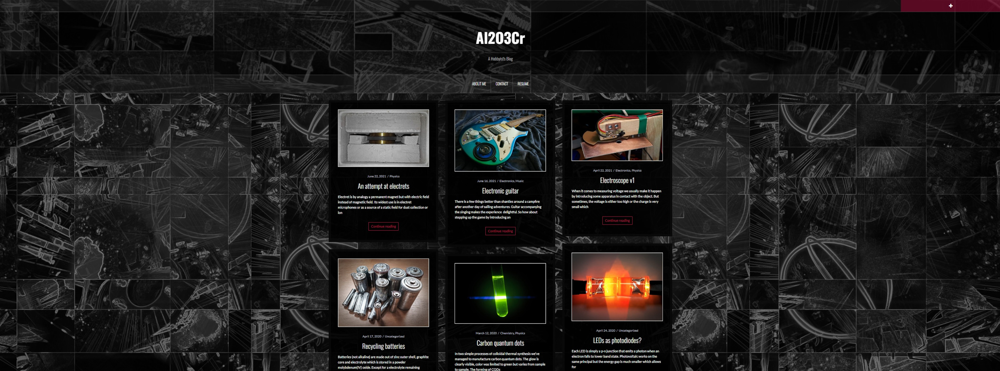

As a celebration of 25th post (and because I learned html and javascript at work) I made a new layout for my blog!
The old blog (al2o3cr) was transferred here as an extension of a new website. The main change is that I switched from using WordPress to a website that I wrote in pure js. The current state of the page is missing some features, but they will be soon restored. The switch to manual approach enabled me to include much more custom content so brace for amazing changes :D
This is the old look :)